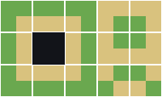
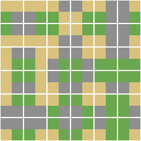
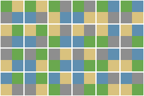

A block holds every corner arrangement that uses all of its materials; an arrangement using fewer belongs to a smaller block. A corner has four positions, so four materials is the most that can meet at one. There is no five-material block and nothing is left over.
Every way the material can meet the outside. Transparent where nothing is, so the silhouette of each piece reads.

The centre is blank: all-Grass and all-Sand each belong to their own edge set, not to this block.

Every arrangement in which all three appear. This is what papercut composites today.

The 24 permutations. With this block nothing composites: every corner a map can make has art that holds it.
| materials | arrangements | using all of them | block | |
|---|---|---|---|---|
| 2, one is nothing | 16 | 15 | 5 × 3 | the all-nothing tile is not drawn |
| 2 materials | 16 | 14 | 5 × 3 | the two pure tiles live in their own edge sets |
| 3 | 81 | 36 | 6 × 6 | fits exactly |
| 4 | 256 | 24 | 6 × 4 | four distinct values in four positions, so 4! permutations |
| 5 | — | 0 | — | impossible a corner has four positions |